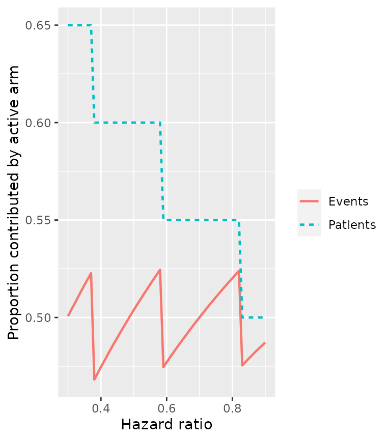
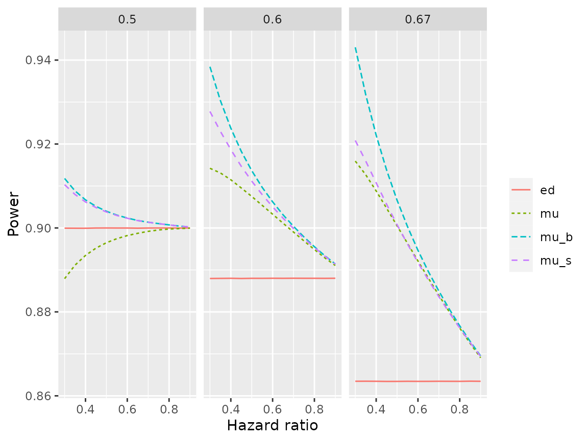

vignettes/example1.Rmd
example1.RmdWe provide here code to replicate Figures 1C and 2 from Example 1 of our manuscript. We rely on R packages tidyverse and ggplot2 for cleaner coding and advanced visualizations.
As described in Web Appendix C, we define ratio of events to patients, control median survival, and accrual duration as increasing functions of HR:
fun_hr <- function(HR, k, range.min, range.max) {
(HR-0.3) / (0.9-0.3) * exp(k*(HR-0.3)) / exp(k*(0.9-0.3)) * (range.max-range.min) + range.min
}The actual assumptions are visualized below:
HR.vec <- seq(0.3, 0.9, 0.01)
plot(HR.vec, fun_hr(HR=HR.vec, k=5, range.min=0.6, range.max=0.7),
xlab="Hazard ratio",
ylab="d/n ratio",
type="l")
plot(HR.vec, fun_hr(HR=HR.vec, k=0, range.min=6, range.max=24),
xlab="Hazard ratio",
ylab="Control median survival (months)",
type="l")
plot(HR.vec, fun_hr(HR=HR.vec, k=2.3, range.min=12, range.max=48),
xlab="Hazard ratio",
ylab="Accrual duration (months)",
type="l")To calculate power across a vector of hazard ratios (HR.vec) and randomization ratio (p1.vec), we begin by initializing the output table. Note that, in addition to keeping track of the power, the table also keeps track of the number of expected events contributed by each arm. Also, for the sake of efficency, the range of scenarios covered in this exercise will be less than that in the manuscript. The resulting figure will therefore be coarser:
p1.vec <- seq(0.5, 0.7, 0.05)
optimal <- tibble(
p1 = rep(p1.vec, each=length(HR.vec)),
HR = rep(HR.vec, length(p1.vec)),
accr_time = fun_hr(HR=HR, k=2.3, range.min=12, range.max=48),
d = (qnorm(0.975)+qnorm(0.9))^2/0.5/0.5/log(HR)^2, # schoenfeld 1981
n = d / fun_hr(HR, k=5, range.min=0.6, range.max=0.7),
m = fun_hr(HR=HR, k=0, range.min=6, range.max=24),
total_time = 0,
power=0,
events0=0,
events1=0
)We then fill in the table using the functions power_two_arm and exp_events described in the vignette basic_functionalities:
R <- dim(optimal)[1]
for (r in 1:R) {
# scenario specific parameters
p1 <- optimal$p1[r]
HR <- optimal$HR[r]
accr_time <- optimal$accr_time[r]
d <- optimal$d[r]
n <- optimal$n[r]
m <- optimal$m[r]
# create arm objects
arm0 <- create_arm(size=n*(1-p1),
accr_time=accr_time,
accr_interval=accr_time*c(0,0.25,0.5,1), # piecewise-uniform accrual
accr_param=c(0.05,0.25,0.7),
surv_scale=per2haz(m),
loss_scale=per2haz(m)*0.05,
follow_time=12)
arm1 <- create_arm(size=n*p1,
accr_time=accr_time,
accr_interval=accr_time*c(0,0.25,0.5,1),
accr_param=c(0.05,0.25,0.7),
surv_scale=per2haz(m/HR),
loss_scale=arm0$loss_scale,
follow_time=12)
# update total_time and follow_time
duration <- exp_duration(arm0, arm1, d=d)
arm0$total_time <- duration
arm0$follow_time <- duration - arm0$accr_time
arm1$total_time <- duration
arm1$follow_time <- duration - arm1$accr_time
# record results
optimal$total_time[r] <- duration
optimal$power[r] <- power_two_arm(arm0, arm1)
optimal$events0[r] <- exp_events(arm0)
optimal$events1[r] <- exp_events(arm1)
}
head(optimal, 5)
#> # A tibble: 5 × 10
#> p1 HR accr_time d n m total_time power events0 events1
#> <dbl> <dbl> <dbl> <dbl> <dbl> <dbl> <dbl> <dbl> <dbl> <dbl>
#> 1 0.5 0.3 12 29.0 48.3 6 23.1 0.888 19.4 9.63
#> 2 0.5 0.31 12.2 30.6 51.1 6.3 23.7 0.889 20.3 10.3
#> 3 0.5 0.32 12.3 32.4 53.9 6.6 24.3 0.889 21.4 11.0
#> 4 0.5 0.33 12.5 34.2 57.0 6.9 24.9 0.890 22.4 11.8
#> 5 0.5 0.34 12.7 36.1 60.1 7.2 25.4 0.891 23.6 12.6The following code produces Figure 1C:
group_by(optimal, HR) %>%
filter(power==max(power)) %>% # identify p1 that maximizes power
mutate(eprop=events1/d) %>%
select(HR, p1, eprop) %>%
gather(category, prop, 2:3) %>%
mutate(category=ifelse(category=="p1", "Patients", "Events")) %>%
ggplot(aes(x=HR,y=prop)) +
geom_line(aes(col=category, lty=category), lwd=0.8) +
labs(x="Hazard ratio",
y="Proportion contributed by active arm",
col="",
lty="")
Figure 2 can be produced via similar steps. Again, for sake of efficiency, a coarser grid of HRs will be considered here. Also, the empirical power based on simulations will not be calculated. First, we initialize the output table:
p1.vec <- c(0.5, 3/5, 2/3)
HR.vec <- seq(0.3, 0.9, 0.05)
fixed <- tibble(
p1 = rep(p1.vec, each=length(HR.vec)),
HR = rep(HR.vec, length(p1.vec)),
accr_time = fun_hr(HR=HR, k=2.3, range.min=12, range.max=48),
d = (qnorm(0.975)+qnorm(0.9))^2/0.5/0.5/log(HR)^2, # schoenfeld 1981
n = d / fun_hr(HR, k=5, range.min=0.6, range.max=0.7),
m = fun_hr(HR=HR, k=0, range.min=6, range.max=24),
ed = 0, # power, schoenfeld
mu = 0, # power, recommended asymptotic approximation
mu_b = 0, # power, block randomization
mu_s = 0 # power, simple randomization
)Then we populate the table:
R <- dim(fixed)[1]
for (r in 1:R) {
# scenario specific parameters
p1 <- fixed$p1[r]
HR <- fixed$HR[r]
accr_time <- fixed$accr_time[r]
d <- fixed$d[r]
n <- fixed$n[r]
m <- fixed$m[r]
# create arm objects
arm0 <- create_arm(size=n*(1-p1),
accr_time=accr_time,
accr_interval=accr_time*c(0,0.25,0.5,1), # piecewise-uniform accrual
accr_param=c(0.05,0.25,0.7),
surv_scale=per2haz(m),
loss_scale=per2haz(m)*0.05,
follow_time=12)
arm1 <- create_arm(size=n*p1,
accr_time=accr_time,
accr_interval=accr_time*c(0,0.25,0.5,1),
accr_param=c(0.05,0.25,0.7),
surv_scale=per2haz(m/HR),
loss_scale=arm0$loss_scale,
follow_time=12)
# update total_time and follow_time
duration <- exp_duration(arm0, arm1, d=d)
arm0$total_time <- duration
arm0$follow_time <- duration - arm0$accr_time
arm1$total_time <- duration
arm1$follow_time <- duration - arm1$accr_time
# record results
fixed$ed[r] <- power_two_arm(arm0, arm1,
test=list(test="weighted logrank",
mean.approx="event driven"))
fixed$mu[r] <- power_two_arm(arm0, arm1)
fixed$mu_b[r] <- power_two_arm(arm0, arm1,
test=list(test="weighted logrank",
var.approx="block"))
fixed$mu_s[r] <- power_two_arm(arm0, arm1,
test=list(test="weighted logrank",
var.approx="simple"))
}The following code produces Figure 2:
gather(fixed, key="approximation", value="power", 7:10) %>%
ggplot(aes(x=HR, y=power)) +
geom_line(aes(col=approximation, lty=approximation)) +
facet_wrap(~round(p1,2)) +
labs(x="Hazard ratio",
y="Power",
col="",
lty="")